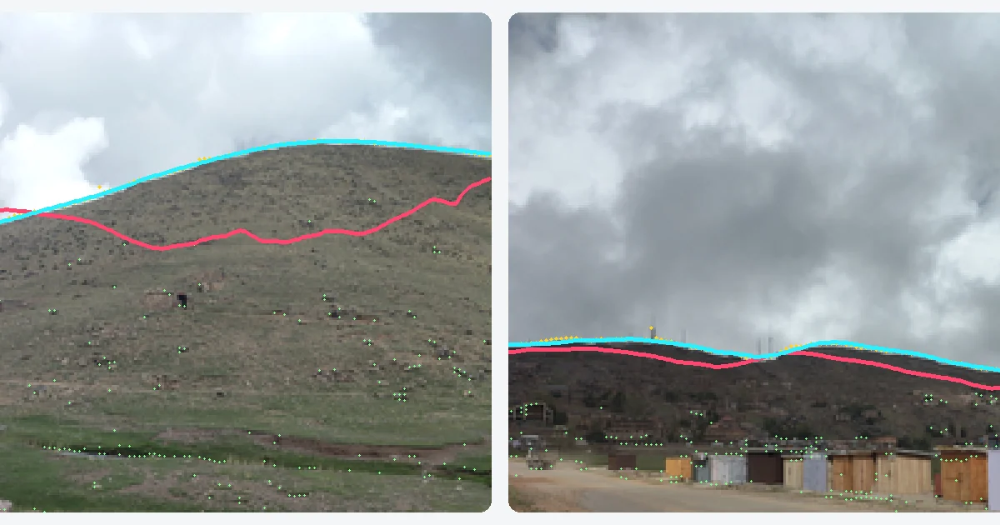

Kostenlose Gipfel-App: jeden Berg erkennen, im Test
Du stehst auf einer Terrasse in Zermatt, auf einem Grat in den Pyrenäen oder im Skilift in Colorado, und jemand fragt: Welcher Gipfel ist das? Der Gipfelfinder in der App SnowScope beantwortet genau das, eine Berge erkennen App für die Hosentasche. Richte dein Handy auf die Berge, und sie zeichnet die Silhouette der Bergkette und schreibt die Namen der Gipfel auf den Bildschirm, mit ihrer Höhe, ihrer Entfernung und ungefähr der Zeit, die du zu Fuß hinauf brauchst. Der Download ist kostenlos, sie funktioniert offline, sobald die Region auf deinem Handy ist, und alle Gipfel mit Namen kosten eine einmalige Zahlung von 0,99 € (0,99 $ in den USA), ohne Abo. Wir haben auch getestet, wie oft sie richtig liegt, und dieser Artikel zeigt die Zahlen, auch dort, wo sie noch scheitert.
Die Live-Schneeprognose für Zermatt in der SnowScope-AppSchneehöhen, Pulverschnee-Alarme und 3D-Karte, gratis.
Was der Gipfelfinder kann
Öffne SnowScope, tippe auf die Kamera und wähle Gipfel. Die App erkennt, wo du stehst und in welche Richtung das Handy zeigt, und zeichnet dann die Linie der Berge über das Kamerabild. Jeder sichtbare Gipfel bekommt ein Etikett: Name, Höhe und Entfernung. Tippst du auf einen, wird er festgehalten, und du siehst die Richtung in Grad, die Gehzeit von deinem Standort und die Schwierigkeit des üblichen Wegs. Wische, um von einem Gipfel zum nächsten zu wechseln.
Ein paar Dinge unterscheiden ihn von einer einfachen Liste der Gipfel in der Nähe. Gipfel, die hinter einem näheren Grat versteckt sind, werden nicht so gezeigt, als könntest du sie sehen; öffnest du von der Karte aus einen Gipfel, der nicht in Sicht ist, sagt dir das die Karte. Die Routenkarte zeigt Auf- und Abstieg, ob du vor Sonnenuntergang zurück wärst und wie viel Schnee auf dem Weg liegt, denn SnowScope ist zuerst eine Schnee-App. Du kannst ein Foto oder einen kurzen Clip mit den Namen aufnehmen und teilen.
So funktioniert es, einfach erklärt
Der Gipfelfinder rät nicht anhand einer Fotodatenbank. Er baut die Landschaft um dich herum aus einer Höhenkarte des Geländes nach: Punkte alle 30 m im Umkreis von 8 km, alle 90 m bis 40 km und darüber hinaus eine gröbere Karte, bis 120 km entfernt. Von deinem Standort aus schickt er in jede Richtung eine Sichtlinie und merkt sich den höchsten Punkt, den sie trifft. So entsteht die Silhouette, die du sehen solltest, und ein Gipfel bekommt nur dann einen Namen, wenn er über allem davor aufragt. Beim ersten Mal an einem Ort lädt er 1 bis 3 MB Gelände herunter; danach funktioniert er ohne Empfang.
Schwierig ist die Richtung. Ein Handykompass lässt sich leicht von einem Auto, einem Metallgeländer oder einem Skilift ablenken, und schon ein paar Grad reichen, um einem Gipfel den falschen Namen zu geben: 5° auf 10 km sind 875 m seitlich, oft schon ein anderer Gipfel. Deshalb verlässt sich der Gipfelfinder nicht allein auf den Kompass. Er sucht im Kamerabild die Linie, an der der Himmel auf die Berge trifft, und dreht die gezeichnete Silhouette, bis beide übereinstimmen. Ist sie eingerastet, hält das Gyroskop des Handys die Etiketten beim Schwenken stabil, und der Kompass kann sie nicht mehr wegziehen.

Wie genau ist er? Was wir gemessen haben
Wir haben drei Tests gemacht und nennen sie mit ihrem Umfang, denn eine Zahl ohne ihren Test ist wenig wert.
Test 1: Welche Gipfel sind wirklich in Sicht? An 14 Orten in den Alpen, den Pyrenäen und den Rocky Mountains, von Dorfplätzen wie Zermatt und Grindelwald bis zu Aussichtspunkten wie der Aiguille du Midi und dem Pic du Midi, haben wir die Gipfel, die die App anzeigt, mit einer langsamen Berechnung in voller Auflösung verglichen, die bis 120 km durchgehend 30-m-Gelände nutzt. Von den 5.449 Gipfeln, die wirklich in Sichtlinie liegen, zeigte die App 5.330 an (97,8 %), und 98,1 % der angezeigten Gipfel waren wirklich in Sicht. An den 12 Orten, die keine großen Aussichtspunkte sind, ist der Unterschied noch kleiner: 975 von 983 gefunden, 8 zu viel. Alle 97 Kontrollen an berühmten Gipfeln stimmten, zum Beispiel das Matterhorn von Zermatt aus in 8,6 km, der Mont Blanc von Chamonix aus in 10,1 km und von Grenoble aus in 113 km.
Test 2: echte Fotos. Wir haben im Ourika-Tal und rund um Oukaïmeden im marokkanischen Hohen Atlas 12 Fotos mit einem Handy gemacht und zu jedem gespeichert, was die Sensoren des Handys meldeten. 6 Fotos hatten eine klare Silhouette. Der Kompass lag zwischen 1,5° und 105,4° daneben (die zwei schlimmsten neben dem Metall einer Skistation); der Median lag bei 5°. Nach dem Abgleich der Silhouette rasteten alle 6 ein, mit einem Median-Fehler von 0,15° und einem größten Fehler von 0,95°. Auf 10 km sind 0,15° gerade 26 m. Die anderen 6 Fotos zeigten Bäume, eine Windschutzscheibe oder gar keinen Himmel, und die App weigerte sich zu Recht, bei einem davon einzurasten. Außerdem haben wir jedes Foto mit den Silhouetten anderer Orte in der Nähe abgeglichen: 0 Treffer bei 36 Versuchen, sie rastet also nicht am falschen Berg ein.
Test 3: simulierte Ansichten. Um viel mehr Situationen zu testen, als wir fotografieren konnten, haben wir an 6 Orten 168 Kameraansichten aus dem Gelände gezeichnet, mit Wolken, Dunst, Schnee vor hellem Himmel, tiefer Sonne und Objekten im Vordergrund sowie Kompassfehlern bis 100°. Beim Schwenken rasteten 107 der 168 innerhalb von etwa einer Sekunde ein (64 %), mit einem Median-Fehler von 0,18°, und keine an der falschen Stelle. Die übrigen blieben beim Kompass, und die App bittet dich dann, ihn zu kalibrieren.


Was unsere Tests nicht zeigen
Das sind unsere eigenen Tests, kein unabhängiger Test. Es gibt nur wenige echte Fotos, 6 mit klarer Silhouette, und alle stammen von einem Handy in einem Gebirge; die 14 Orte in Test 1 vergleichen zwei Berechnungen aus denselben Höhenkarten und derselben Gipfelliste, ein Fehler in den Kartendaten selbst würde also nicht auffallen. Namen und Höhen stammen aus OpenStreetMap, das in den Alpen sehr gut und in manchen Gebirgen dünner ist.
Der Gipfelfinder muss die Silhouette sehen. Bei Nebel, dichtem Schneefall, tiefem grauem Himmel über verschneitem Boden oder im Wald kann er nicht einrasten und greift auf den Kompass zurück; in unseren simulierten Ansichten rastete er nie ein, wenn verschneite Hänge auf einen bedeckten Himmel im gleichen Grau trafen. Dann kalibriere den Kompass, indem du das Handy in einer 8 bewegst, wie die App es verlangt, und vertraue den großen Gipfeln mehr als den kleinen Buckeln.
Was kostenlos ist und was Pro kostet
Die App ist kostenlos, mit Werbung. Im Gipfelfinder sehen kostenlose Nutzer die ganze Silhouette, die Entfernung, Höhe und Gehzeit jedes sichtbaren Gipfels und die Namen der 3 wichtigsten Gipfel im Bild, den höchsten zuerst. Jeder Gipfel, den du von der Karte aus öffnest, behält ebenfalls seinen Namen. Die anderen Gipfel erscheinen als „Gipfel“ mit ihrer Höhe und einem kleinen Schloss.
SnowScope Pro nennt jeden Gipfel beim Namen. Es ist ein einmaliger Kauf, kein Abo: Bei Google Play kostet es 0,99 $ in den USA, 0,99 € in den Euroländern, 0,99 £ in Großbritannien, 0,90 CHF in der Schweiz, 14 kr in Schweden und 13 kr in Norwegen, Stand 13. November 2026. Dieselbe Zahlung entfernt auch die Werbung und schaltet die 3D-Videos deines Skigebiets frei. Manchen Nutzern wird außerdem ein kurzes Werbevideo angeboten, das 24 Stunden lang kostenlos jeden Gipfel beim Namen nennt.
Im Vergleich mit PeakFinder, PeakVisor und PeakLens
PeakFinder, PeakVisor und PeakLens sind bekannte Apps, die diese Aufgabe gut erledigen, jede auf ihre Art, und die Tabelle fasst zusammen, was ihre eigenen Store-Seiten und Websites am 13. November 2026 angaben. PeakFinder ist eine kostenpflichtige App (5,99 $ bei Google Play in den USA), mit einer Zahlung und ohne Werbung; sie kennt mehr als 1.000.000 Gipfel weltweit, zeichnet Landschaften bis 300 km Entfernung und funktioniert komplett offline. PeakVisor ist ein kostenloser Download mit einem kostenpflichtigen PRO-Upgrade im Abo, bietet zusätzlich 3D-Karten, Wanderwege und GPS-Tracking und gibt an, mehr als eine Million Berge abzudecken. PeakLens ist ein kostenloser Download eines Forschungsteams des Politecnico di Milano; wie SnowScope vergleicht es das Kamerabild mit einem Geländemodell, um Kompassfehler zu korrigieren, und führt mehr als 200.000 Gipfel.
Worin sich SnowScope unterscheidet: Alle Namen kosten einmalig 0,99 $, und mit 3 Namen kannst du es kostenlos nutzen; es zeigt zusätzlich Gehzeit, Route und Schnee auf dem Weg; und dieselbe App liefert dir die Schneevorhersage, die Schneehöhe und die Lawinenwarnstufen für den Berg, den du gerade anschaust. Wo es weniger kann: Es deckt 7 Bergregionen ab, nicht die ganze Welt, und seine Liste von 164.051 benannten Gipfeln ist kleiner als die weltweiten Listen der anderen.
Tipps für die besten Ergebnisse
Stell dich dorthin, wo du freien Himmel über den Graten siehst, und halte das Handy aufrecht auf Augenhöhe. Schwenke ein, zwei Sekunden langsam über die Aussicht: Der Abgleich klappt am besten, wenn er eine lange, zackige Silhouette sieht. Geh vor dem Start weg von Autos, Metallgeländern und Liftmasten. Sagt die App, dass der Kompass kalibriert werden muss, bewege das Handy in einer 8. Vor einer Tour ohne Empfang lade deine Region einmal im WLAN herunter, über den Offline-Bildschirm des Gipfelfinders.
Wo er funktioniert
Der Gipfelfinder funktioniert in den 7 Bergregionen, die SnowScope abdeckt: die Alpen (79.564 benannte Gipfel), die Pyrenäen (13.506), Skandinavien (21.133), der Westen der USA (34.720), der Nordosten der USA (6.786), Westkanada (7.672) und der marokkanische Atlas (670). Eine ganze Region für die Offline-Nutzung braucht zwischen 25 MB (die Pyrenäen) und 401 MB (der Westen der USA); du kannst die Kamera auch einfach online nutzen, und sie behält, was sie herunterlädt.
Welche ist die beste kostenlose App, um Berge zu erkennen?
Das hängt davon ab, wo du wanderst oder Ski fährst. Bist du in den Alpen, den Pyrenäen, Skandinavien, im Westen oder Nordosten der USA, in Westkanada oder im Atlas, kannst du SnowScope mit den 3 wichtigsten Namen im Bild kostenlos nutzen, und alle Namen kosten einmalig 0,99 $. Für andere Gebirge deckt eine weltweite App wie PeakFinder oder PeakVisor mehr ab.
Gibt es eine App, die Berge über die Kamera erkennt?
Ja. SnowScope, PeakFinder, PeakVisor und PeakLens schreiben alle Bergnamen auf das Kamerabild. SnowScope gleicht außerdem die gezeichnete Silhouette mit der echten im Bild ab, damit die Namen auch bei falschem Kompass an den richtigen Gipfeln bleiben.
Ist SnowScope eine kostenlose Alternative zu PeakFinder?
Für die Regionen, die es abdeckt, ja: Der Download ist kostenlos, die Silhouette und 3 Namen sind kostenlos, und alle Namen kosten einmalig 0,99 $, ohne Abo. PeakFinder ist eine kostenpflichtige App, die die ganze Welt abdeckt.
Funktioniert der Gipfelfinder auch offline?
Ja. Lade deine Region einmal über den Offline-Bildschirm des Gipfelfinders herunter, oder nutze die Kamera zuerst online: Was sie herunterlädt, bleibt auf deinem Handy. GPS funktioniert ohne Mobilfunkempfang.
Warum stehen die Namen manchmal an der falschen Stelle?
Meist ist der Kompass gestört oder die Silhouette von Wolken oder Bäumen verdeckt, sodass die App sie nicht abgleichen kann. Richte das Handy auf einen klaren Grat, schwenke langsam und kalibriere den Kompass. Gipfel, die als teilweise verdeckt markiert sind, schauen nur knapp über einen näheren Grat.
Gibt es die App auch fürs iPhone?
Derzeit gibt es den Gipfelfinder in der App SnowScope bei Google Play für Android-Handys.
Tipps für Skifahrer
- Schwenke ein, zwei Sekunden langsam über eine klare, zackige Silhouette: Dann rasten die Namen ein.
- Halte Abstand zu Autos, Geländern und Liftmasten, und kalibriere den Kompass mit einer 8, wenn die App danach fragt.
- Lade deine Region vor einer Tour ohne Empfang im WLAN herunter.
- Bei Nebel oder flachem grauem Himmel vertraue den großen Gipfeln mehr als den kleinen Buckeln.
Weitere Karten (externe Seiten)
Quellen und Nachweise
- Google Play: SnowScope: Snow & Powder (Preise von SnowScope Pro abgelesen am 13. November 2026) play.google.com/store/apps/details?id=snowruler.app&utm_source=snowscope_blog&utm_medium=blog&utm_campaign=peakfinder
- PeakFinder bei Google Play (Preis, Funktionen, abgelesen am 13. November 2026) play.google.com/store/apps/details?id=org.peakfinder.area.alps
- PeakFinder: die mobile App (offizielle Website) www.peakfinder.com/mobile/
- PeakVisor bei Google Play (abgelesen am 13. November 2026) play.google.com/store/apps/details?id=tips.routes.peakvisor
- PeakVisor (offizielle Website) peakvisor.com/
- PeakLens bei Google Play (abgelesen am 13. November 2026) play.google.com/store/apps/details?id=com.peaklens.ar
- PeakLens (offizielle Website) www.peaklens.com/
- Copernicus DEM GLO-30 und GLO-90 (Europäische Weltraumorganisation) spacedata.copernicus.eu/collections/copernicus-digital-elevation-model
- OpenStreetMap-Mitwirkende (Gipfelnamen und -höhen, ODbL) www.openstreetmap.org/copyright
Zu diesen Zahlen
Test 1: 14 Orte, Gelände der App (30 m bis 8 km, 90 m bis 40 km, gröber bis 120 km) und Gipfelliste im Vergleich mit einer vollständigen 30-m-Berechnung bis 120 km (Copernicus DEM GLO-30) mit denselben Gipfeln (OpenStreetMap); ein Gipfel gilt als in Sicht, wenn er über das Gelände davor aufragt. Test 2: 12 Fotos eines Android-Handys (23. Oktober 2026), die wahre Richtung jedes Fotos offline per Rundumsuche bestimmt und von Auge geprüft; 6 hatten eine klare Silhouette. Test 3: 168 synthetische Kameraansichten von 6 Orten, 7 Szenen, 4 Richtungen, Kompassfehler bis 100°, je 6 Bilder beim Schwenken; ein Einrasten ist richtig innerhalb von 1° Richtung und 0,5° Neigung, falsch ab 2° bzw. 1°. Preise: Google Play, 13. November 2026. Konkurrenten: ihre Store-Seiten und Websites am selben Tag.
Diesen Bericht zitieren
Für Forschung, Lehre oder Presse: Zahlen und Grafiken sind unter CC BY 4.0 mit dieser Quellenangabe frei nutzbar.
SnowScope (2026), Kostenlose Gipfel-App: jeden Berg erkennen, im Test, https://snowscope.app/blog/de/2026/11/free-peak-finder-app-name-mountains-snowscope.html, abgerufen am 2026-11-13
SnowScope (Atlas Labs). (2026, November 13). Kostenlose Gipfel-App: jeden Berg erkennen, im Test. SnowScope snow reports. https://snowscope.app/blog/de/2026/11/free-peak-finder-app-name-mountains-snowscope.html
BibTeX
@misc{snowscope2026freepeakfinderappnamemou,
author = {{SnowScope (Atlas Labs)}},
title = {Kostenlose Gipfel-App: jeden Berg erkennen, im Test},
year = {2026},
month = nov,
howpublished = {\url{https://snowscope.app/blog/de/2026/11/free-peak-finder-app-name-mountains-snowscope.html}},
note = {Published 2026-11-14 13:29 UTC; accessed 2026-11-13}
}· CC BY 4.0 · Methoden, Daten und Werkzeuge →
Zermatt folgen
Gratis: eine Nachricht, wenn Neuschnee kommt, und jeden Morgen die Vorhersage.
Weitere Schneeberichte

Wo solltest du in den nächsten Tagen sein? Hier sind die Skigebiete mit dem meisten prognostizierten Neuschnee für die nächsten 24 Stunden und bis …

Wo solltest du in den nächsten Tagen sein? Hier sind die Skigebiete mit dem meisten prognostizierten Neuschnee für die nächsten 24 Stunden und bis …

Die heutige Tabelle sortiert die Skigebiete Europas, Marokkos und Nordamerikas nach prognostiziertem Neuschnee für die nächsten 24 Stunden und bis …